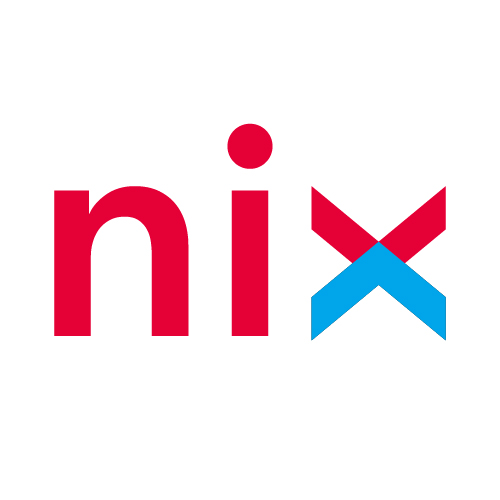
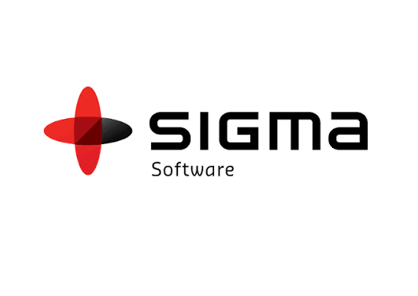
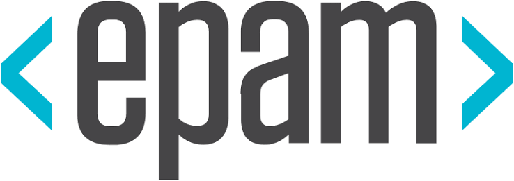
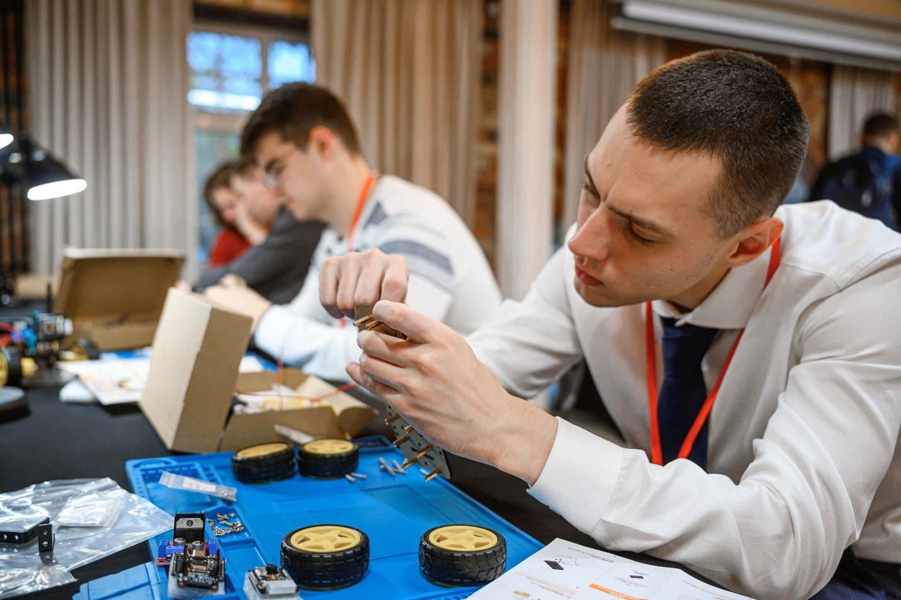
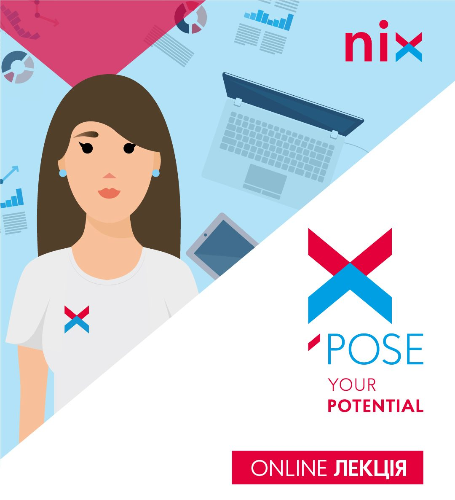
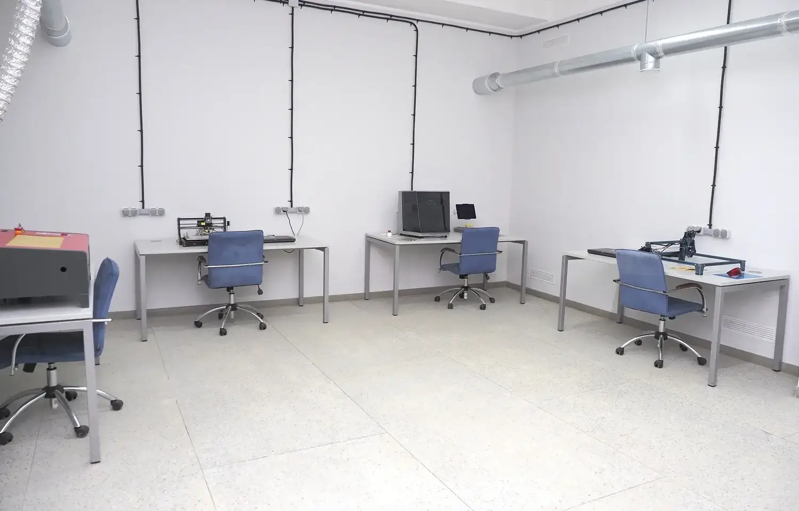

126
«Інформаційні системи і технології»

Ми спеціалізуємось на підготовці фахівців в області мережевих, програмних та інформаційних технологій за двома напрямками: 172 — Електронні комунікації та радіотехніка і 126 — Інформаційні системи та технології.
«Інформаційні системи і технології»
«Електронні комунікації та радіотехніка»



Досвідчених викладачів
Навчальних дисциплін
Талановитих випускників
Унікального досвіду
"Дуже подобається, що знання тут універсальні. Я зміг поєднати технічні навички з цифровим маркетингом, і тепер успішно працюю з Google Ads та аналітикою. Викладачі завжди підтримують сучасні ініціативи та дають свободу у виборі тем для проєктів."
"Навчання на кафедрі дало мені потужну базу. Особливо круто, що ми багато працюємо з реальними проєктами на Python та проєктуємо бази даних. Це дозволило мені швидко адаптуватися до реальних робочих задач та знайти круту роботу ще під час навчання."
"Сучасні підходи та актуальний стек технологій — це те, за чим сюди варто йти. Навчився працювати з Git, налаштовувати середовища та розуміти архітектуру інформаційних систем. Рекомендую всім, хто шукає практичний досвід, а не просто суху теорію."
"Окрема подяка викладачам за те, що завжди на зв'язку і допомагають розібратися зі складним кодом."
Наші студенти не просто вивчають теорію — вони беруть участь у реальних проєктах, розробляють ІТ-рішення, створюють стартапи та співпрацюють з компаніями-партнерами. На кафедрі діють наукові гуртки, лабораторії та ініціативи, де кожен може реалізувати себе ще під час навчання. Дослідження, що перетворюються на продукт — саме тут це можливо.

Команда студентів нашої кафедри представила інноваційний стартап на базі штучного інтелекту та здобула перше місце серед 50 університетів України.
28 вер 2026
В рамках співпраці з ІТ-компаніями студенти дізналися про сучасні тренди у розробці програмного забезпечення. Спікери поділилися реальними кейсами з практики.
25 вер 2026Викладачі та магістранти кафедри взяли участь у міжнародній конференції, де обговорили новітні методи захисту інформаційних систем від кібератак.
20 вер 2026
За підтримки наших партнерів з GlobalLogic на кафедрі відкрито сучасну лабораторію мережевих технологій. Практичні заняття стануть ще ефективнішими!
15 вер 2026